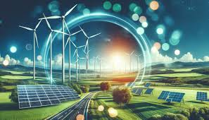

Las energías renovables son un tipo de energías derivadas de fuentes naturales que llegan a reponerse más rápido de lo que pueden consumirse. Un ejemplo de estas fuentes son, por ejemplo, la luz solar y el viento; estas fuentes se renuevan continuamente. Las fuentes de energía renovable abundan y las encontramos en cualquier entorno. Por el contrario, los combustibles fósiles, como el carbón, el petróleo y el gas, constituyen fuentes de energía no renovables que tardan cientos de millones de años en formarse. Los combustibles fósiles producen la energía al quemarse, lo que provoca emisiones dañinas en forma de gases de efecto invernadero, como el dióxido de carbono.
La generación de energías renovables produce muchas menos emisiones que la quema de combustibles fósiles. Una transición de los combustibles fósiles, los cuales representan en la actualidad la mayor parte de las emisiones, a energías renovables resulta fundamental para abordar la crisis producida por el cambio climático.
Hoy en día, las energías renovables son más baratas en la mayoría de los países y generan tres veces más puestos de trabajo que los combustibles fósiles.